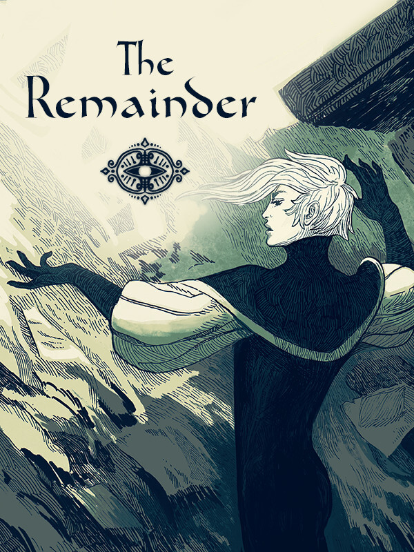

The Remainder: Act 1
The Remainder: Act 1
Details
|  | |
| Playtime | 1h 18m 0s |
| Last Activity | 2021-06-02 23:02:03 |
| Added | 2023-08-11 0:29:08 |
| Modified | 2025-10-02 9:37:57 |
| Completion Status | Completed |
| Library | Steam |
| Source | Steam |
| Platform | PC (Windows) |
| Release Date | 2021-06-09 |
| Community Score | |
| Critic Score | |
| User Score | |
| Genre | Indie |
| Developer | |
| Publisher | |
| Feature | |
| Links | Steam Twitch |
| Tag | 2D Atmospheric Casual Dark Dark Fantasy Emotional Episodic Free to Play Hand-drawn Indie LGBTQ+ Narration Otome Psychological Horror Romance Singleplayer Story Rich Stylized Text based Visual Novel |
Description
This is a story of two magi, Vyn and Ilar, who find themselves trapped in a collapsing tower with their only hope for salvation being a difficult ritual. Or at least that is what Ilar tells you. The thing is - you don’t remember anything, and Ilar’s story makes less and less sense the closer you are to the ritual. Are they hiding things to protect you from the bitter truth, or are they deceiving you for some more nefarious reason?
Guide Vyn’s actions to death and beyond and uncover Ilar’s truth. Are they your colleague, lover or something completely different? Read between the lines of what they are telling you, explore your surroundings for clues and use hands-on deduction to break the vicious circle and set them free.
Features
172 000 words or 8-40 hours of bittersweet suffering.
Over 500 choices, some more regrettable than others.
Around 50 false and 3 true endings. (It's not all bad, we promise)
A pretty nonbinary silver-tongued smug-face who might or might not murder you.
Yes, you do get to bone them, or get boned by them.
But you don't have to if that's not your thing.
A magnificent cat who cares not if you live or die.
An adorable eel friend.
Death. Lots of it.
An angry potato.